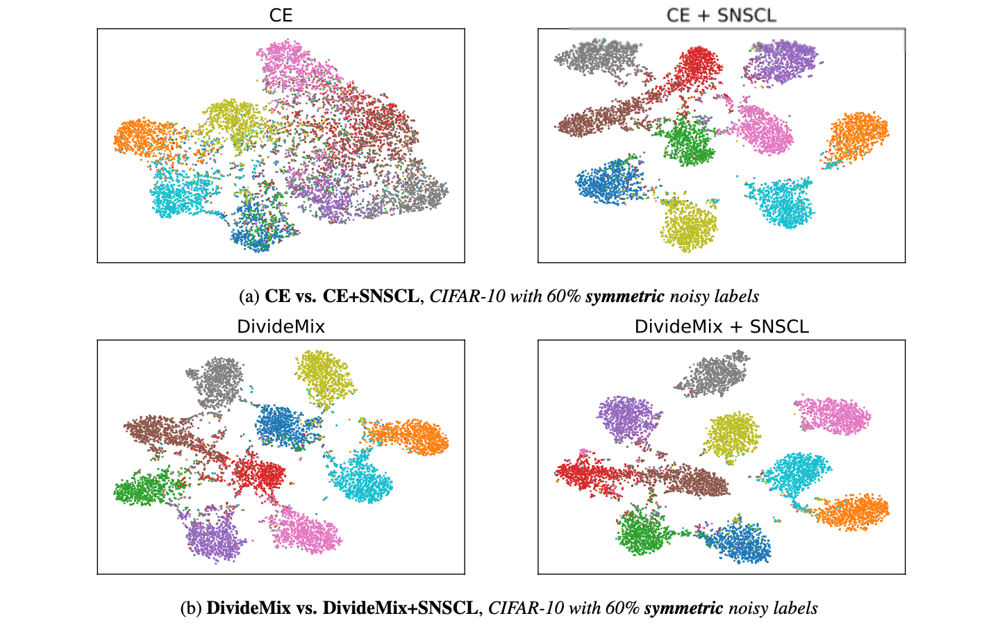
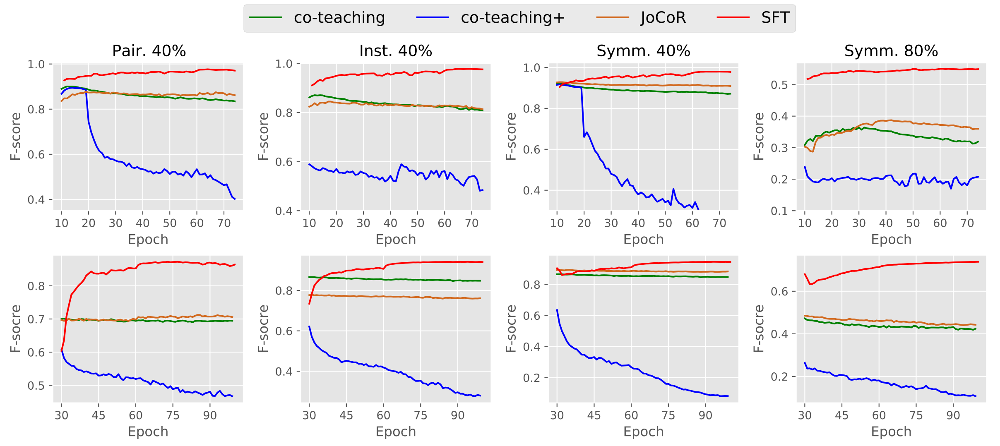
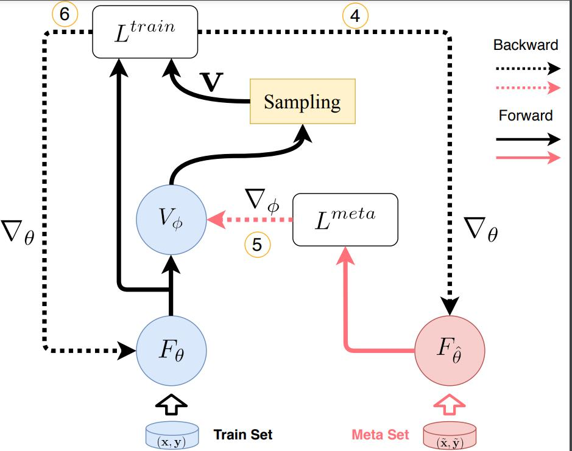
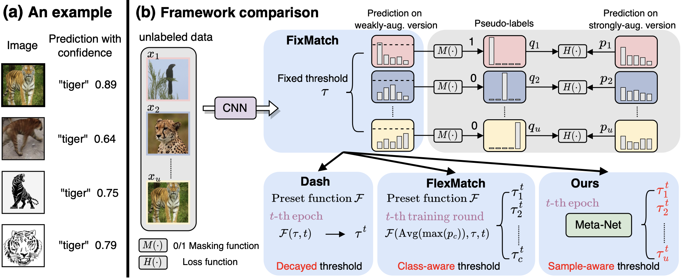
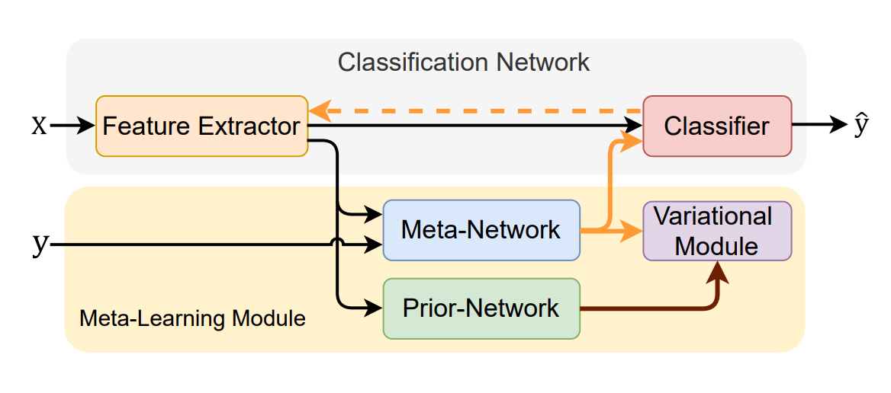
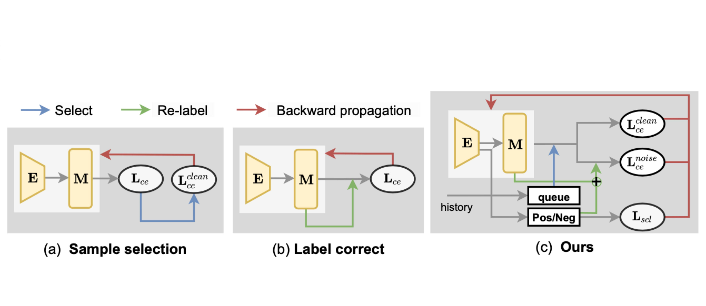
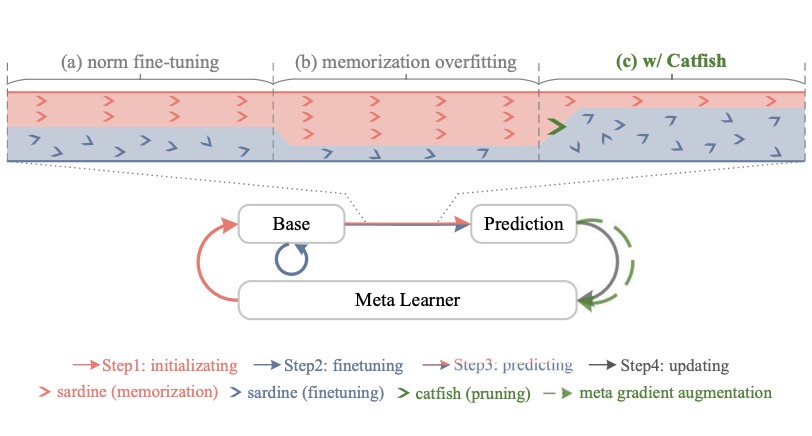
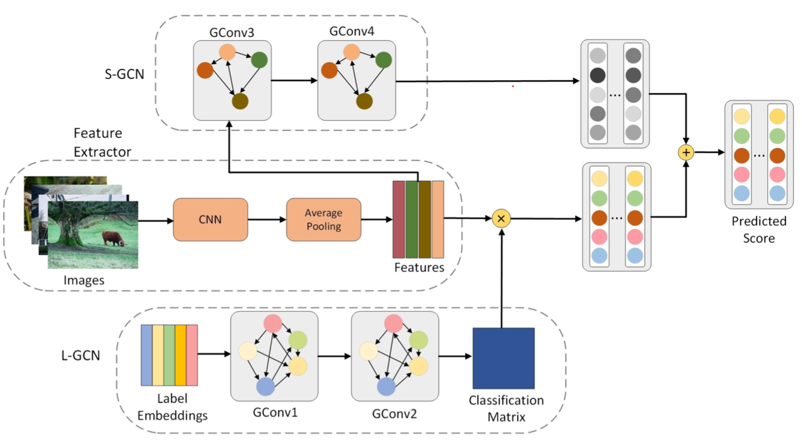

Qi Wei 魏琦Master student
1500 Shunhua Road, Jinan, China |
|  |
Fine-Grained Classification with Noisy Labels. Qi Wei, Lei Feng, Haoliang Sun, Chenhui Guo, Ren Wang, Yilong Yin. |
|  |
Self-Filtering: A Noise-Aware Sample Selection for Label Noise with Confidence Penalization. Qi Wei, Haoliang Sun, Xiankai Lu, Yilong Yin. ECCV 2022. [ paper ] [ code ] [ poster ] |
|  |
Learning to Rectify for Robust Learning with Noisy Labels. Haoliang Sun#, Chenhui Guo#, Qi Wei, Zhongyi Han, Yilong Yin. |
|  |
Learning Sample-Aware Confidence Threshold for Semi-Supervised Learning. Qi Wei, Lei Feng, Haoliang Sun, Ren Wang, Yilong Yin. In submission |
|  |
Variational Rectification Inference for Learning with Noisy Labels. Haoliang Sun#, Qi Wei#, Chenhui Guo, Zhongyi Han, Yilong Yin. |
|  |
A Joint Training Framework for Learning with Noisy Labels. Qi Wei, Haoliang Sun, Yuling Ma, Yilong Yin. In submission |
|  |
Improving Generalization in Meta-Learning via Meta-Gradient Augmentation. Ren Wang, Haoliang Sun, Qi Wei, Chenhui Guo, Yuling Ma, Yilong Yin. In submission |
|  |
Grasp Them All: Partial Multi-Label Learning with Graphically Structural Constraints. Chenhui Guo, Haoliang Sun, Qi Wei, Ren Wang, Yilong Yin. In submission |